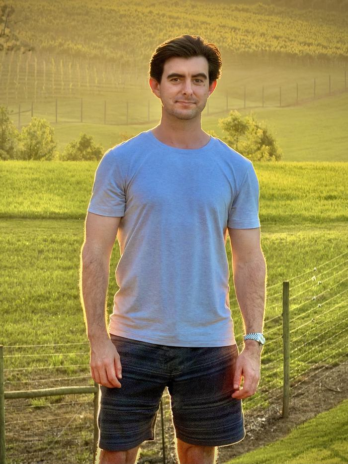

04
About Me

I make films, and I ask people what they believe and why.
I was born and raised in Bristol, Virginia. I started making movies when I was nine, with my dad's camera.
I went to high school at Baylor School in Chattanooga, Tennessee, from 2001 to 2005. Then I went to the University of Central Florida in Orlando from 2005 to 2011 and earned a BFA in film. At UCF I directed Love Awkwardly. It won best picture at the UCF Campus MovieFest finale and best comedy at the Southern Regional Finale in Atlanta, and it was shown at the Cannes Short Film Corner. In 2007, while I was at UCF, I made my Halo 3 vlog.
I lived in Los Angeles from 2011 to 2024. In 2014 I directed Sanctuary, a horror feature, with writer Josh Ingle. I've been director of photography on 15 Minutes of Faye and Gambler's Ballad. In 2017 I was assistant editor and post production supervisor on Escape Room. I've also been director of photography and producer on Brett Ryan Bonowicz's documentaries, including Closer Than We Think. See the film work.
I've made Street Epistemology content since 2016. I host Cordial Curiosity, and I'm a board member at Street Epistemology International. In 2022 Peter Boghossian hired me to produce content for his Reverse Q&A tour, and I created Spectrum Street Epistemology. Read more about my SE work.
Now I live in Bristol, Virginia, and soon I'll live in Naples, Florida too.
In short
A short timeline
- 2001
I started high school at Baylor School in Chattanooga, Tennessee.
- 2005
I graduated from Baylor School and started at the University of Central Florida.
- 2007
I made the Halo 3 midnight launch vlog while I was at UCF.
- 2011
I finished at UCF and moved to Los Angeles. I lived in Studio City until 2013.
- 2013
I moved to Hollywood and stayed until 2024.
- 2014
I directed Sanctuary, a horror feature.
- 2016
I started making SE content.
- 2017
I was assistant editor and post production supervisor on Escape Room.
- 2022
Peter Boghossian hired me to produce content for his Reverse Q&A tour.
- Now
I live in Bristol, Virginia, and soon in Naples, Florida too.
Places
Where I've been
Where I've lived, worked, and traveled. Pick a year, or tap a place to fly there.
Click the map to enable scroll-zoom.